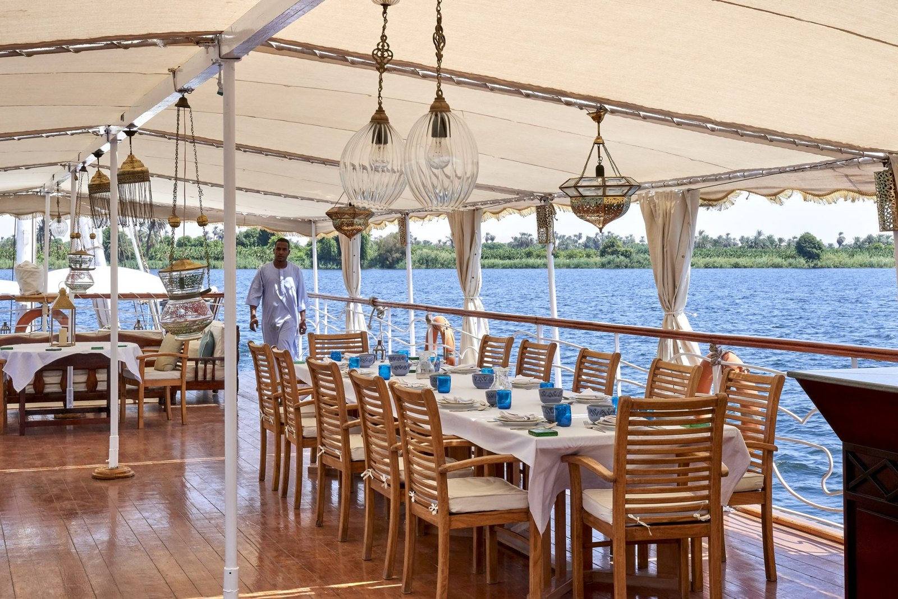
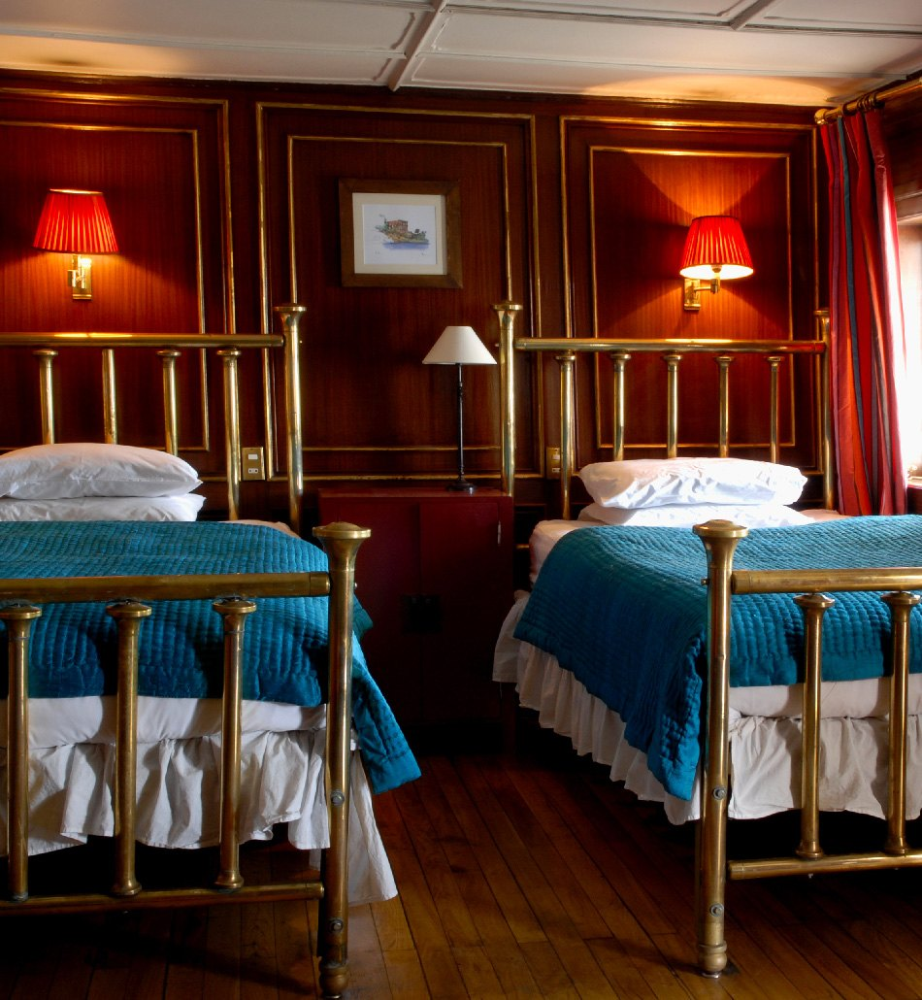

Croisières sur le Nil : les 5 plus belles, comparées
Entre un bateau de cent six passagers et une dahabieh de quatorze, ce n'est pas le
même voyage, ce n'est pas le même pays. Cinq embarcations classées non pas sur leur
confort, mais sur un critère que les brochures ne mesurent jamais : ce qu'elles vous
font voir de l'Égypte quand les cars sont repartis.
Par Emmanuel Laveran, rédacteur hôtels et gastronomie✺Publié le 31 juillet 2026✺15 min de lecture
Le pont supérieur de la Gaïa, seize passagers et un bassin en zellige.
Devant, le remorqueur qui prend le relais quand la brise tombe. Photo : Gaïa, site officiel.
TL;DR : l'essentielLe classement tient en un chiffre : le nombre de passagers
Lazuli Travel Bureau, Indice Dépaysement 4,8/5 :
la seule des cinq à proposer le lac Nasser, sur un safari-boat de trois
à quatre cabines. Dunes, forteresse de Qasr Ibrim, bivouacs sur des plages désertes.
Le plus loin qu'on puisse aller de la file d'attente de Karnak.
Dahabieh Gaïa, 4,6/5 :
seize passagers, huit cabines dont quatre suites à terrasse, un bassin en zellige sur
le pont et la voile tant que le vent le permet. La plus belle des dahabiehs du Nil.
La Flâneuse du Nil, 4,5/5 :
quatorze passagers, sept cabines, la plus petite capacité de cette page.
Un voyage d'archéologie lente, d'Assouan à Esna.
Le contre-pied : le RV Star of Luxor
ferme ce classement avec 3,2/5, alors que c'est objectivement le bateau le plus
confortable de la sélection : piscine, jacuzzi, conférences à bord, cabines de 14,5 à 16 m².
Cent six passagers ne voient pas la même Égypte que quatorze, et c'est
exactement ce que cette page sert à mesurer.
L'Indice Dépaysement LMHS, et ce qu'il ne mesure pas
Cette page ne note pas le confort. Un bateau de cent passagers avec piscine sera toujours plus confortable qu'un voilier de quatorze, et le dire n'apprend rien à personne. L'Indice Dépaysement LMHS, noté sur 5, mesure autre chose : la probabilité de vous retrouver seuls devant quelque chose. Il repose sur cinq marqueurs vérifiables, et rien d'autre :
La capacité : le nombre de passagers que le bateau peut embarquer. Moins il y en a, mieux c'est.
La propulsion : à la voile, au moteur, ou à la vapeur. Le silence change le voyage.
L'itinéraire : les haltes hors des sites majeurs, les villages de rive, le lac Nasser.
Les nuits : au mouillage en pleine nature, ou à quai dans un port de croisière.
La densité du programme : du temps libre, ou un enchaînement de visites guidées.
Le classement suit cet indice, pas le niveau de prestation. C'est ce qui fait remonter un safari-boat de trois cabines au-dessus d'un cinq ancres, et descendre le plus confortable des cinq à la dernière place. Les capacités du tableau sont celles annoncées par les opérateurs, vérifiées une par une.
Le tableau : capacité, type de bateau et itinéraire
Rang
Bateau
Type
Capacité
Cabines
Parcours
Indice Dépaysement
01
Lazuli Travel Bureau
Dahabieh et safari-boat
3 à 4 cabines sur le lac
3 à 4
Nil et lac Nasser
4,8/5
02
Dahabieh Gaïa
Dahabieh à voiles latines
16
8 dont 4 suites
Nil, Haute-Égypte
4,6/5
03
La Flâneuse du Nil
Dahabieh
14
7 dont 1 suite
Assouan à Esna
4,5/5
04
Steam Ship Sudan
Vapeur de la fin du XIXe
≈ 46
23 dont 5 suites
Louxor à Assouan
4,0/5
05
RV Star of Luxor
Bateau moteur, 72 m
106
53 dont 8 suites
Louxor à Assouan
3,2/5
Classement par Indice Dépaysement. Capacités et nombres de cabines relevés en
juillet 2026 sur les sites des opérateurs. La capacité du Steam Ship Sudan est déduite de ses
23 cabines, l'armateur ne publiant pas de nombre de passagers.
Pourquoi cette page ne publie aucun tarif
Nous avons cherché, et nous n'avons pas trouvé de quoi publier honnêtement. Une croisière sur le Nil se vend au forfait et par personne, avec ou sans les vols depuis Paris, avec ou sans les droits d'entrée sur les sites, en cabine partagée ou en occupation simple. Les écarts entre deux annonces pour le même bateau et la même semaine dépassent couramment le millier d'euros, et les comparateurs recopient des tarifs de saisons passées.
Publier un « à partir de » dans ces conditions revient à annoncer un chiffre dont nous savons qu'il sera faux pour la plupart des lecteurs. Nous préférons ne rien annoncer et vous dire pourquoi, avec un conseil de méthode : demandez toujours un devis nominatif à l'opérateur, en précisant vols inclus ou non, et comparez ce que la cabine simple coûte réellement, c'est là que se creusent les écarts.
La sélection : cinq bateaux, cinq philosophies du voyage
01

Lazuli Travel Bureau, Nil et lac Nasser indice 4,8/5
Pour qui : ceux qui ont déjà fait le Nil, ou qui veulent commencer par le bout que personne ne fait.
C'est la seule proposition de cette page à sortir du Nil. À la dahabieh classique entre Esna et Assouan, l'opérateur ajoute l'Aga Khan sur le lac Nasser, trois à quatre cabines seulement. Le lac est un autre pays : un paysage minéral où la dune tombe directement dans l'eau, des temples déplacés pierre par pierre lors de la construction du haut barrage, Kalabsha, le kiosque de Kertassi, les bas-reliefs de Beit el-Ouali. On y croise plus d'oiseaux que de bateaux, et on dîne sur le sable d'une plage déserte face à la forteresse de Qasr Ibrim. C'est le maximum de dépaysement accessible en Égypte sans expédition.
Le bémol LMHS : le lac Nasser n'a pas la densité archéologique de la vallée. Si c'est votre premier voyage en Égypte et que vous voulez Karnak, la Vallée des Rois et Edfou, prenez d'abord le Nil, gardez le lac pour la fois suivante. Trois cabines, c'est aussi une disponibilité très contrainte.
Dahabieh sur le Nil et safari-boat sur le lac Nasser · 3 à 4 cabines sur le lac ·
Kalabsha, Kertassi, Beit el-Ouali, Qasr Ibrim ·
Site officiel →
02
Dahabieh Gaïa, Haute-Égypte indice 4,6/5
Pour qui : un voyage à deux, ou une famille qui privatise. C'est la plus aboutie des dahabiehs du Nil.
Seize passagers dans huit cabines, dont quatre suites à terrasse privée sur le pont supérieur. Les suites ont de larges baies vitrées, les cabines du pont inférieur des salles de bains en marbre et un calme absolu. Sur le pont, un bassin en zellige, des transats sous parasols, et de grands canapés où la journée se passe à regarder défiler la berge. Le bateau avance à la voile tant que le vent tient, et se fait pousser par un remorqueur discret quand il tombe. Un chef prépare la cuisine égyptienne à bord, et le programme laisse la place à ce qui ne se planifie pas : une halte sur une grève pour se baigner, un dîner dressé dans un champ à la tombée du jour.
Le bémol LMHS : la Gaïa se privatise beaucoup, et une dahabieh partagée avec quinze inconnus n'est pas la même chose qu'une dahabieh à vous. Demandez à la réservation dans quelle configuration vous partez. Le remorqueur, enfin, est le prix à payer d'un calendrier tenu : la voile seule ne garantit aucun horaire.
16 passagers · 8 cabines dont 4 suites à terrasse · Voiles latines et remorqueur ·
Bassin sur le pont supérieur · Chef à bord ·
Site officiel →
03
La Flâneuse du Nil, d'Assouan à Esna indice 4,5/5
Pour qui : ceux qui viennent pour l'archéologie, et qui veulent la faire lentement.
Sept cabines, quatorze passagers : c'est la plus petite capacité de cette sélection. La dahabieh, construite en 2006, aligne une suite arrière avec balcon, des salles de bains privées, la climatisation et un salon garni de livres. Le parcours descend d'Assouan vers Esna et se lit comme une chronique de chantier de fouilles : Kom Ombo et son temple double dédié à Horus l'Ancien et à Sobek, le Gebel Silsileh et ses fronts de taille de grès, le spéos d'Horemheb creusé dans la roche, Edfou que douze mètres de sable ont protégé des siècles durant, et pour finir le temple de Khnoum d'Esna, au fond de sa fosse, neuf mètres sous le niveau du bourg.
Le bémol LMHS : quatorze passagers sur sept cabines, cela veut dire une vie collective permanente, à table comme sur le pont. Ceux qui cherchent à disparaître préféreront une privatisation. La Flâneuse et le Steam Ship Sudan sont par ailleurs exploités par le même voyagiste, ce qui simplifie les combinaisons mais réduit la concurrence sur les tarifs.
14 passagers · 7 cabines dont 1 suite arrière avec balcon · Construite en 2006 ·
Assouan, Kom Ombo, Gebel Silsileh, Edfou, Esna ·
Voyageurs du Monde →
04

Steam Ship Sudan, le vapeur d'Agatha Christie indice 4,0/5
Pour qui : les lecteurs. Ce bateau est un décor de roman, et il l'assume entièrement.
C'est un authentique vapeur de la fin du XIXe siècle, remis en service dans les années 2000, et le seul de cette page à ne pas être une reconstitution. Vingt-trois cabines, dont cinq suites, toutes différentes, toutes baptisées du nom d'un voyageur : Howard Carter, Thomas Cook, et Agatha Christie, qui embarqua réellement en 1933 avec son mari l'archéologue Max Mallowan. Boiseries laquées, lits dorés à cannage, parquet clair, téléphones à cadran, robinetterie de laiton, tissus et objets chinés dans les bazars du Caire. Le parcours relie Louxor à Assouan en une semaine, par Philae, Kom Ombo, Edfou et l'écluse d'Esna.
Le bémol LMHS : un vapeur de 23 cabines n'a ni le silence ni la souplesse d'une dahabieh, et son itinéraire suit la route classique des bateaux de croisière, aux mêmes heures et aux mêmes quais. On y vient pour l'objet et pour son histoire, pas pour l'isolement. Attention aussi à la légende : le décor entretient l'imaginaire de Mort sur le Nil, mais le roman n'a pas été écrit à bord.
Vapeur de la fin du XIXe · 23 cabines dont 5 suites · Louxor à Assouan, environ 7 nuits ·
Agatha Christie à bord en 1933 · Exploité par Voyageurs du Monde ·
Site officiel →
05
RV Star of Luxor, le classique assumé indice 3,2/5
Pour qui : une première fois en Égypte, une famille, ou tout voyageur qui veut voir l'essentiel sans rien organiser.
Soixante-douze mètres de long sur 13,60 de large, cent six passagers dans 53 cabines réparties sur trois ponts, dont huit suites de 22 m². Les cabines font de 14,5 à 16 m², le salon-bar ouvre sur de larges baies panoramiques, et le pont soleil porte une piscine et un jacuzzi. Le circuit entre Louxor et Assouan couvre l'ensemble du programme pharaonique sans temps mort, avec des conférences à bord. C'est le seul bateau de cette page où l'on peut confier ses enfants à une piscine pendant que l'on souffle, et c'est un argument réel.
Le bémol LMHS : cent six passagers, ce sont des visites en groupe, des quais partagés avec d'autres unités, et des sites abordés aux heures où tout le monde y est. Le dépaysement se joue alors à terre, entre deux étapes, et beaucoup moins à bord. Rien de rédhibitoire, à condition de savoir ce qu'on achète : un très bon bateau de croisière, pas une échappée.
106 passagers · 53 cabines de 14,5 à 16 m², 8 suites de 22 m² · 72 m de long ·
Piscine et jacuzzi · Conférences à bord ·
Site officiel →
Le mot d'EmmanuelLe Nil ne se visite pas, il se laisse passer
Il y a deux façons de remonter ce fleuve. La première consiste à cocher les temples dans l'ordre, entre deux repas et une conférence, et elle a sa dignité : on voit énormément de choses en une semaine, et on ne les oublie pas. La seconde consiste à accepter de ne pas savoir à quelle heure on arrivera, parce que la voile dépend du vent. Ce que l'on vient chercher sur une dahabieh, ce n'est pas un temple de plus, c'est une berge qui défile lentement et une nuit au mouillage où l'on entend l'appel à la prière traverser l'eau depuis un village qu'aucun car ne dessert. Ce classement ne dit pas que les petits bateaux sont meilleurs. Il dit qu'ils ne racontent pas la même Égypte, et que le nombre de passagers est le seul chiffre qui prédise à peu près sûrement laquelle des deux vous rapporterez.
Emmanuel Laveran, rédacteur hôtels et gastronomie
Nil ou lac Nasser : deux voyages qui n'ont rien à voir
Le Nil, c'est la densité : les grands temples s'enchaînent de Louxor à Assouan, les berges sont habitées, cultivées, bruyantes de vie, et la navigation est courte entre deux sites. C'est le voyage à faire en premier, celui qui donne les clés.
Le lac Nasser, c'est le vide : cinq cents kilomètres de mer intérieure née du haut barrage, des rives sans villages, des temples démontés et remontés plus haut pour échapper à la montée des eaux. On y navigue des heures sans croiser personne, et les nuits au mouillage n'ont pas d'équivalent dans la vallée. C'est un second voyage, pas un premier.
Quand partir
D'octobre à avril, sans hésitation. La chaleur de Haute-Égypte en juillet et en août dépasse régulièrement les 40 °C à l'ombre, et les visites de temples se font en plein soleil, souvent sans un mètre carré d'ombre. Décembre et janvier sont les mois les plus fréquentés et les plus chers : les dahabiehs, qui comptent sept ou huit cabines, se remplissent plusieurs mois à l'avance. Octobre, mars et avril offrent le meilleur compromis, avec des températures encore tenables et une fréquentation moindre.
Un point de calendrier qui compte plus qu'on ne croit sur un petit bateau : le vent. Une dahabieh dépend de la brise du nord pour remonter le fleuve, et les périodes de calme rallongent les étapes ou imposent le remorqueur. Aucun opérateur ne vous le garantira, et c'est normal.
FAQ : croisière sur le Nil
Quelle est la différence entre une dahabieh et un bateau de croisière ?
Une dahabieh est un voilier traditionnel à deux voiles latines, qui embarque ici de 14 à 16 passagers, avance lentement et mouille souvent en pleine nature. Un bateau de croisière est motorisé, embarque de 100 à 300 passagers selon les unités, tient un horaire, et accoste aux quais des ports de croisière. Le premier vous montre des berges, le second vous montre des temples. Dans notre sélection, l'écart de capacité va de 14 passagers sur La Flâneuse du Nil à 106 sur le RV Star of Luxor.
Combien de passagers embarque chaque bateau de la sélection ?
Chiffres relevés en juillet 2026 sur les sites des opérateurs : La Flâneuse du Nil, 14 passagers en 7 cabines ; Gaïa, 16 passagers en 8 cabines dont 4 suites ; Steam Ship Sudan, 23 cabines dont 5 suites, soit environ 46 passagers ; RV Star of Luxor, 106 passagers en 53 cabines ; le safari-boat de Lazuli sur le lac Nasser ne compte que 3 à 4 cabines.
Quelle est la meilleure période pour une croisière sur le Nil ?
D'octobre à avril. La Haute-Égypte dépasse régulièrement 40 °C en juillet et en août, et les temples se visitent sans ombre. Décembre et janvier sont les mois les plus demandés : sur une dahabieh de sept cabines, il faut s'y prendre plusieurs mois à l'avance. Octobre, mars et avril offrent le meilleur rapport entre climat et fréquentation.
Combien coûte une croisière sur le Nil ?
Nous ne publions pas de tarif sur cette page, faute d'avoir pu en vérifier un seul de façon fiable. Ces croisières se vendent au forfait et par personne, avec ou sans les vols, avec ou sans les droits d'entrée sur les sites, et les écarts entre deux annonces pour le même bateau dépassent couramment mille euros. Demandez un devis nominatif à l'opérateur, en précisant vols inclus ou non, et regardez ce que coûte l'occupation simple : c'est là que se creusent les écarts.
Une croisière sur le Nil convient-elle aux enfants ?
Le RV Star of Luxor est le mieux armé pour cela : piscine, jacuzzi, cabines familiales et rythme encadré. Sur une dahabieh, l'espace est réduit, le programme dépend du vent et les journées sont contemplatives, ce qui convient mieux à des enfants déjà grands. Les conditions d'âge varient d'un armateur à l'autre : posez la question avant de réserver, aucun des cinq opérateurs ne publie de règle unique.
Agatha Christie a-t-elle écrit « Mort sur le Nil » à bord du Steam Ship Sudan ?
Elle a bien voyagé à bord en 1933, avec son mari l'archéologue Max Mallowan, et une cabine porte son nom. En revanche, dire que le roman y a été écrit relève de la légende commerciale : le bateau a nourri l'imaginaire du livre, il n'en a pas été le bureau. La distinction mérite d'être faite, parce qu'elle revient dans presque toutes les brochures.
Méthode et sources
5 croisières retenues parmi les opérateurs francophones présents sur le Nil et le lac Nasser, classées par l'Indice Dépaysement LMHS et non par niveau de prestation. L'indice, noté sur 5, repose sur cinq marqueurs vérifiables : capacité du bateau, mode de propulsion, itinéraire hors des sites majeurs, nuits au mouillage en pleine nature, densité du programme de visites. Aucune navigation de contrôle n'a été effectuée pour cette sélection, et nous ne prétendons pas le contraire : capacités, nombres de cabines, itinéraires et caractéristiques techniques ont été relevés en juillet 2026 sur les sites des cinq opérateurs, et recoupés lorsqu'ils divergeaient. Aucun tarif n'est publié, faute de source fiable, et la page explique pourquoi. À noter, deux des cinq bateaux, La Flâneuse du Nil et le Steam Ship Sudan, sont exploités par le même voyagiste. Aucun partenariat commercial, aucune affiliation, aucun voyage offert. Photographies : sites officiels de la Gaïa, de Lazuli Travel Bureau et du Steam Ship Sudan.